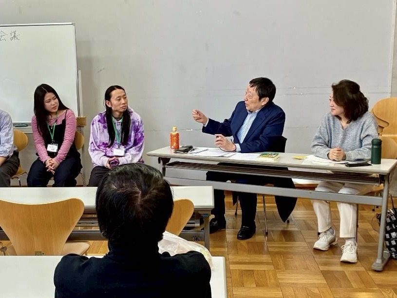

若者と、はちおうじの街を考える会議

誰もが地域の未来づくりに 参加できるコミュニティ それが―
地域コミュニティの希薄化や高齢化が進み、住民同士が顔を合わせたり、地域について語り合ったりする機会が少なくなった中、みんなのまち会議は、世代を超えた交流を通して、人と人とのつながりを育み、地域の課題や未来について一緒に考える場を作ることを目指しています。 more→
次回まち会議は
12/12(土) 13:00〜
＠長池公園自然館レクチャールーム 予約不要 資料代300円（学生無料）